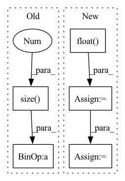

Pattern ID :40013

Before Change
def forward(self, pred, target):
log_prob = F.log_softmax(pred, dim=-1)
dist = torch.empty_like(pred).fill_(self.smoothing / (pred.size(-1) - 1))
dist.scatter_(dim=-1, index=target[..., None], value=(1 - self.smoothing))
loss = F.kl_div(log_prob, dist)
return loss
After Change
def forward(self, pred: torch.Tensor, target: torch.Tensor, mask: torch.Tensor):
pred = pred.flatten(0, 1)
target = target.flatten(0, 1)
mask = mask.flatten(0, 1).float()
chunked_pred = torch.chunk(pred, chunks=self.chunk, dim=0)
chunked_target = torch.chunk(target, chunks=self.chunk, dim=0)
chunked_mask = torch.chunk(mask, chunks=self.chunk, dim=0)
log_prob = [F.log_softmax(p, dim=-1) for p in chunked_pred]
loss = [self.smoothed_loss(p, t, m)[None]\
for p, t, m in zip(log_prob, chunked_target, chunked_mask)]
loss = torch.cat(loss, dim=0).sum()
return loss / mask.sum()
In pattern: SUPERPATTERN
Frequency: 3
Non-data size: 5
Instances
Fragment ID: 113802312
Project Name: rick-mccoy/reformer-pytorch
Commit Name: 3411114d22e0bfcae2e106f5c82a3211da83f409
Time: 2020-02-29
Author: rickmccoy3141@gmail.com
File Name: model/labelsmoothing.py
M Class Name: LabelSmoothing
N Class Name: LabelSmoothing
M Method Name: forward(4)
N Method Name: forward(3)
M Parent Class: nn.Module
N Parent Class: nn.Module
M File Name: model/labelsmoothing.py
N File Name: model/labelsmoothing.py
M Start Line: 11
M End Line: 16
N Start Line: 13
N End Line: 24
'>
Before Change
// Calculate the exact sampling point
if kernel == "nearest":
idx = pos_discrete[0] + x.size(-1) * pos_discrete[1]
else:
idx = pos_discrete[0] + (x.size(-1) + 1) * pos_discrete[1]
After Change
// The target coordinates do not require gradients
pos = torch.arange(sizes[0] * sizes[1], **dkwargs)
pos_i = (pos // sizes[1]).float()
pos_j = (pos % sizes[1]).float()
// Map the target coordinates to the source coordinates
// This implements the backward warping
pos_tar = torch.stack([pos_j, pos_i, torch.ones_like(pos_i)], dim=0)
pos_src = torch.matmul(m.inverse(), pos_tar)
pos_src = pos_src[:2] / pos_src[-1, :]
// Out of the image
pos_bound = pos_src.new_tensor([x.size(-1), x.size(-2)]) - 0.5
pos_bound.unsqueeze_(-1)
pos_in = torch.logical_and(pos_src.ge(-0.5), pos_src.lt(pos_bound))
pos_in = pos_in.all(0)
// Remove the outside region and compensate subpixel shift
sub = (k % 2) / 2
pos_src = pos_src[..., pos_in]
pos_src_sub = pos_src - sub
pos_discrete = pos_src_sub.ceil().long()
pos_frac = pos_src_sub - pos_src.floor()
pos_frac.unsqueeze_(1)
// (2, 1, HW)
'>
Fragment ID: 113802379
Project Name: thstkdgus35/bicubic_pytorch
Commit Name: eb261bd72c7d717dab243fa09c6be01c8cdce6cb
Time: 2020-07-26
Author: sonsang35@gmail.com
File Name: core_warp.py
M Class Name: AnonimousClass
N Class Name: AnonimousClass
M Method Name: warp_by_size(6)
N Method Name: warp_by_size(6)
M Parent Class:
N Parent Class:
M File Name: core_warp.py
N File Name: core_warp.py
M Start Line: 38
M End Line: 104
N Start Line: 38
N End Line: 92
'>
Before Change
out_masks = make_non_pad_mask(olens).unsqueeze(-1).to(ys.device)
out_masks = torch.nn.functional.pad(out_masks.transpose(1, 2), [0, ys.size(1) - out_masks.size(1), 0, 0, 0, 0], value=False).transpose(1, 2)
out_weights = out_masks.float() / out_masks.sum(dim=1, keepdim=True).float()
out_weights /= ys.size(0) * ys.size(2)
// apply weight
l1_loss = l1_loss.mul(out_weights).masked_select(out_masks).sum()
After Change
out_weights = out_masks.float() / out_masks.sum(dim=1, keepdim=True).float()
out_weights /= gold_spectrograms.size(0) * gold_spectrograms.size(2)
duration_masks = make_non_pad_mask(text_lengths).to(gold_spectrograms.device)
duration_weights = (duration_masks.float() / duration_masks.sum(dim=1, keepdim=True).float())
// apply weight
l1_loss = l1_loss.mul(out_weights).masked_select(out_masks).sum()
duration_loss = (duration_loss.mul(duration_weights).masked_select(duration_masks).sum())
return l1_loss, duration_loss
'>
Fragment ID: 113802316
Project Name: digitalphonetics/ims-toucan
Commit Name: b8532b46fafdc2f07c5ce57d6b7711db0682be18
Time: 2023-03-09
Author: lux.florian@gmail.com
File Name: TrainingInterfaces/Text_to_Spectrogram/ToucanTTS/ToucanTTSLoss.py
M Class Name: ToucanTTSLoss
N Class Name: ToucanTTSLoss
M Method Name: forward(8)
N Method Name: forward(5)
M Parent Class: torch.nn.Module
N Parent Class: torch.nn.Module
M File Name: TrainingInterfaces/Text_to_Spectrogram/ToucanTTS/ToucanTTSLoss.py
N File Name: TrainingInterfaces/Text_to_Spectrogram/ToucanTTS/ToucanTTSLoss.py
M Start Line: 35
M End Line: 43
N Start Line: 19
N End Line: 53